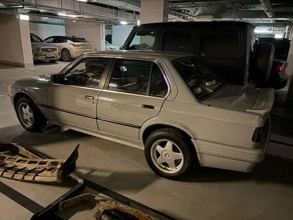
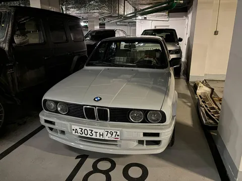
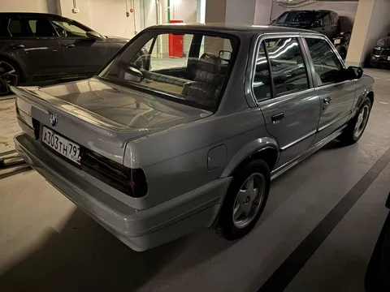

Дамы и господа, встречайте - Мышь!
Одно из важных преображений состоялось, и бэха теперь оклена серым винилом. Что-то в духе Nardo Grey, но чуть светлее. Почему серый? Ну во-первых, это красиво. А во-вторых, она раньше была темно-серая, и в документах зафиксирован цвет "серый", и выбери я что-то другое - пришлось бы вносить изменения в документы, а этого сильно хотелось избежать. Зато теперь облик стал более интересным и фактурным, темно-серый был уж совсем невзрачным.
Оклейка была совмещена с установкой обвеса, так и что и результат - совместный. Кажется, получилось хорошо. Хоть и не без нюансов - оклейщики жаловались на невозможно плохую адгезию бамперов из абс-пластика, им пришлось прибегнуть к какой-то лютой химии, чтобы пленка вообще легла. И задний бампер оказался неудачным по исполнению, уголки у арок так и не получилось подогнать - либо торчит, либо щель. А еще пленка ожидаемо повторила все изъяны кузова, который ранее был кем-то когда-то покрашен весьма паршиво - поверх грязи, пыли, стекла и бычков. Ребята как-то минимально вышкурили его, но полностью нюансы, конечно же, не ушли. Ну да ладно, с 3 метров - зашибись.
Очевидно, это еще не финальный облик. Как минимум, как я уже писал в прошлый раз, нужно поставить поворотники и туманки. И на этом мы тоже не остановимся - впереди еще как минимум 3 важных манипуляции, без которых образ результата не будет достигнут. Stay tuned, while #лёха_строит_бэху


